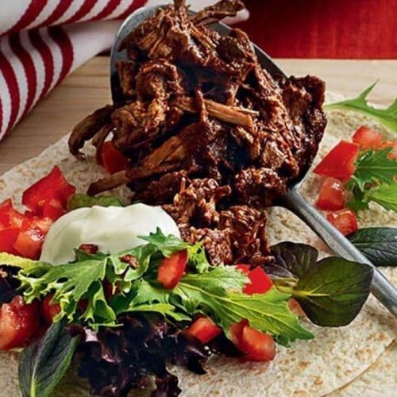

BEEFS

Slow-cooked pulled beef
By slow cooking the beef in this easy recipe you can get a meltingly soft result that's full of comforting flavours, with just a few simple ingredients. fibre to these beef burger patties, so skip the takeaways and make your own perfectly portioned burger meal with sweet potato fries.
Serves: 6
Time to make: 4 hrs 30 mins
Hands-on time: 10 mins
Nutrition Info (per serve)
Calories : 449cal
Kilojoules : 1879kJ
Protein : 43g
Total fat : 15.4g
Saturated fat : 6.1g
Carbohydrates : 34.1g
Sugars : 10.9g
Dietary fibre : 34.1g
Sodium : 512mg
Calcium : 92mg
Iron : 5.7mg
Ingredients
1kg beef brisket, fat trimmed
1 cup passata
1 tablespoon brown sugar
2 tablespoon Worcestershire sauce
2 teaspoon paprika
2 cloves garlic, crushed
6 wholemeal tortillas, warmed
200g salad leaves
4 tomatoes, diced
170g reduced-fat Greek yogurt
Instructions
1. Using a sharp knife, cut the beef almost all the way through and open out to make a large slab, then put in a slow cooker (or see HFG tip). Combine the passata, brown sugar, worcestershire sauce, paprika and garlic in a mixing bowl or jug, then pour evenly over the beef. Cover with the lid and cook on high for 4 hr (or on low for 6–8 hr) or until the beef is very tender and shreds easily when tested with a fork.
2. Once cooked, transfer the beef to a clean carving board. Pour the sauce in the slow cooker (or the casserole dish) into a saucepan, set over a medium heat and simmer for 20 min or until reduced by half. Meanwhile, pull the beef into large shreds using 2 forks, then transfer to a warmed serving dish.
3. Mix the sauce reduction through the pulled beef. Serve on top of the tortillas with the salad leaves, tomatoes and yogurt.